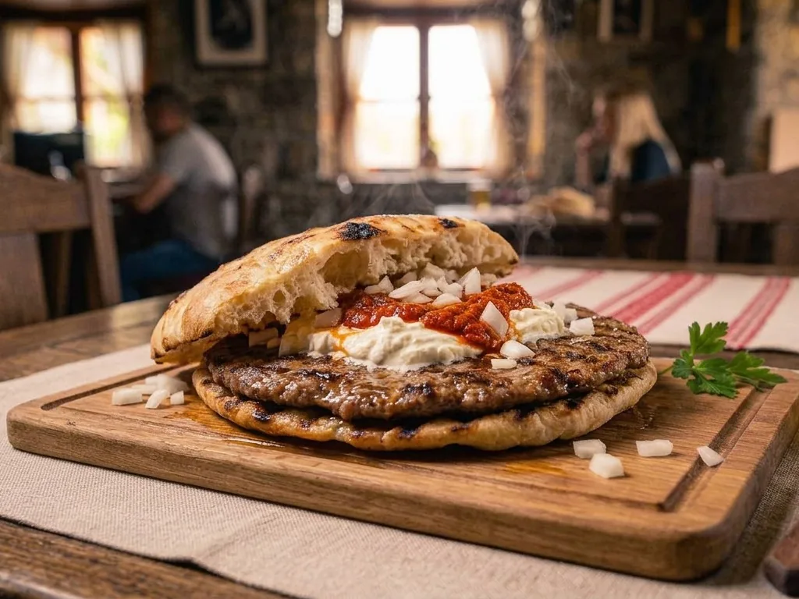
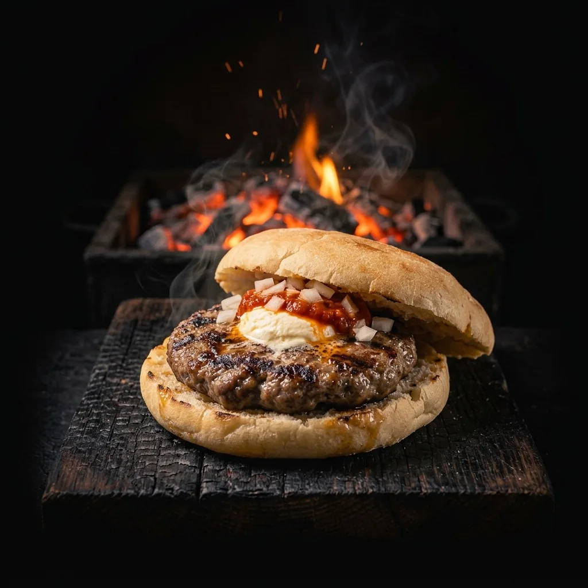
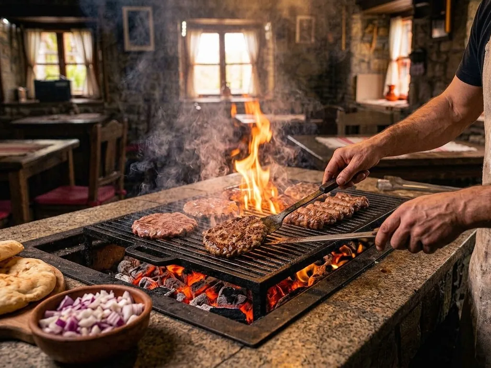
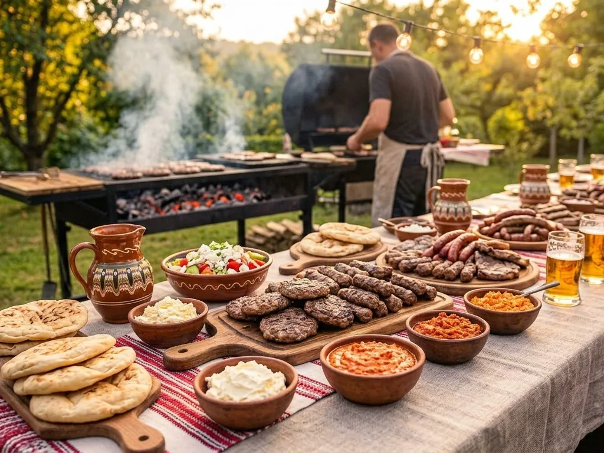

Cea mai comandată
Pljeskavica Clasică
250 g vită și porc, lepinja, ceapă crudă, kajmak, ajvar.
42 lei
Deschidem în curând
Rețeta din Leskovac, carne tocată în fiecare dimineață și grătar pe cărbuni de fag. Servită în lepinja caldă cu kajmak, cum se mănâncă la Belgrad.

Meniu
Povestea noastră
Pljeskavica nu e un burger. E o bucată de carne lată, tocată grosier, făcută pe grătar deschis și pusă direct în lepinja caldă, cu sucul care îmbibă pâinea. Așa o fac de generații în sudul Serbiei, și exact așa o facem și noi.
Nu folosim carne congelată, nici amestecuri gata făcute. Tocăm în fiecare dimineață, coacem lepinja în casă și ținem kajmakul trei zile până se maturează.

Vită și porc de la furnizori locali, tocate grosier în fiecare dimineață.
Carnea se odihnește 12 ore cu sare și condimente. Secretul texturii.
Cărbune real, fără gaz. Crustă fumurie la exterior, suculentă la interior.
Pâinea se înmoaie în zeama de pe grătar. Apoi kajmak, ajvar, ceapă.
Catering & evenimente
Nunți, botezuri, petreceri de firmă, festivaluri. Venim cu grătarul nostru, cu grătargiii noștri și cu tot ce trebuie, de la 30 la 500 de invitați.

Locație